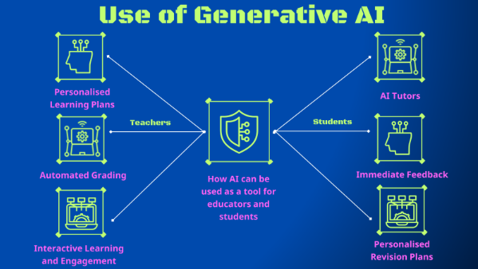

The page or area describing the opportunities presented by your chosen technology/topic.
AI offers several opportunities for enhancing education. Firstly,
AI can personalize learning by tailoring materials to individual student needs and preferences,
thereby increasing engagement and understanding. Secondly,
AI supports the development of adaptive curricula that evolve with student growth and capabilities,
making learning experiences more relevant and effective(Marisa, Siti, et al,2024). Thirdly, AI can provide objective and comprehensive assessments of student progress,
enabling timely feedback and better decision-making by educators.
The study finds that AI can significantly improve learning personalization, adaptive curriculum development,
and student progress assessment. However, it also highlights several challenges.
Ethical concerns, such as ensuring fairness and avoiding biases, must be addressed. Protecting student data privacy is crucial,
and there must be equitable access to AI technology to prevent disparities.
ChatGPT, an advanced language model created by OpenAI, stands out as an effective tool in various academic settings,
particularly in engineering and computer science(Morsy, Mohamed, et al, 2023).

Some Examples of its use include:
Personalised learning plans made using AI can analyse student data, including performance, learning styles, and engagement patterns, to create customised educational experiences. By tailoring content, pacing, and feedback to individual needs, AI-driven platforms like Khan Academy and DreamBox adapt lessons in real-time, ensuring that each student receives the appropriate level of challenge and support. This approach not only improves learning outcomes and engagement but also efficiently addresses diverse learning needs, making education more effective and inclusive.
Automated grading using AI to assess students work quickly and accurately, such as multiple-choice tests, essays, and assignments. Using machine learning algorithms and natural language processing, AI can evaluate answers, provide instant feedback, and identify common errors. This not only saves teachers critical time but also allows for more consistent and objective grading. By automating routine assessments, teachers can focus more on addressing individual student needs, improving the student’s overall education.
AI boosts interactive learning and engagement by quickly creating examples and engaging content. It can draft high-quality essays or problem solutions for students to follow, helping them understand what a high-level paper may looks like. AI also develops interactive content like quizzes, simulations, and educational games, making learning more fun and effective. This approach keeps students interested and provides clear benchmarks, enhancing their understanding and retention of the material.